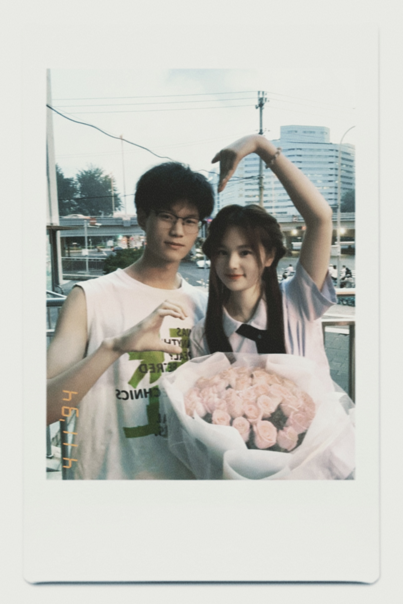

Xuext
Beihang University · 北京航空航天大学｜研究生｜立体视觉
首页
⛰️文章
🌬️分类
📚论文精读
💗💗
首页就先占个坑吧，以后再写
放上我的头像吧 😄
👋 有点不像情侣头像的情侣头像 👋
@ 不爱恰西瓜 🤝 @ 洛希极限
爆个照骗

✨ 近期文章
查看全部 (21) →
华为机考 AI 方向笔试题（9 月 9 日）
求职
2026-10-25
条件注入
深度学习
2026-10-23
3DGS 源码解析：梯度统计、增密与优化器状态
Gaussian Splatting
2024-11-05
Vue 3 登录页实战：Vite、Vue Router、Element Plus 与 Axios
Vue
2024-11-03
PyTorch C++/CUDA Extension 教程
PyTorch
2024-11-03
Windows/macOS 连接 VMware Ubuntu：SSH、SCP 与密钥认证
Linux
2024-10-30